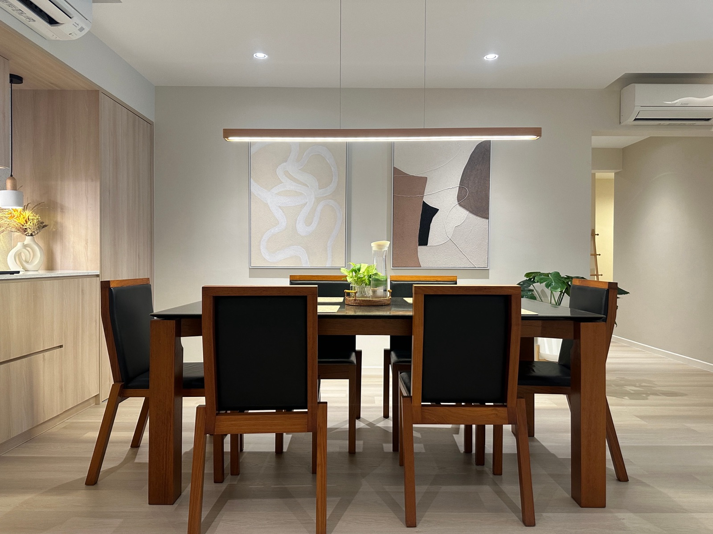
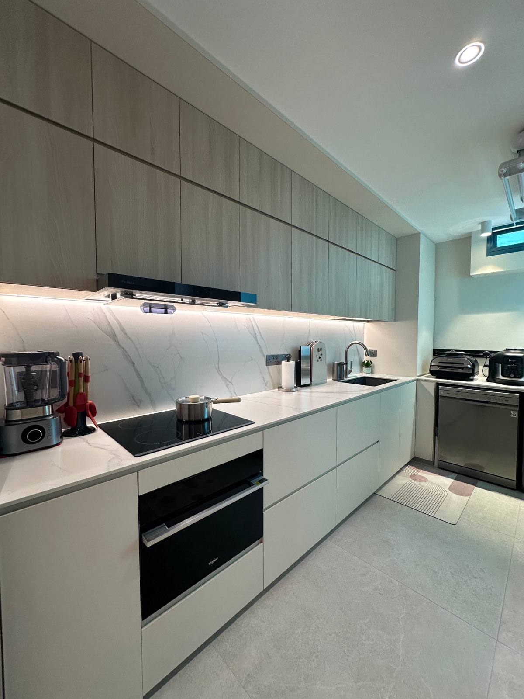
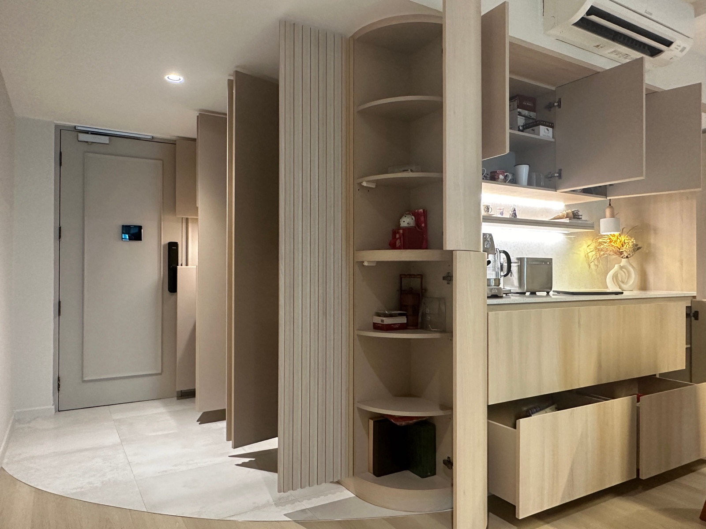

Key Takeaways
A well-planned HDB 4-room resale renovation starts with assessing the flat’s condition before any design decisions.
Hacking, rewiring, and plumbing updates are often necessary due to ageing finishes and systems.
Layout changes can improve flow, but must comply with HDB guidelines.
Storage planning is essential to maximise space without overbuilding.
Budgeting should prioritise structural and functional upgrades before aesthetics.
Understanding What Makes a Resale Renovation Different
An HDB 4-room resale renovation is not just about redesigning a space, it is about correcting, upgrading, and adapting an existing one. Unlike BTO flats, which are handed over in relatively standardised condition, resale units come with varying levels of wear, prior renovations, and ageing systems that influence the scope of renovation.
This means homeowners are often dealing with a mix of outdated finishes, concealed defects, and layouts that reflect older lifestyle needs. Some flats may still have original tiles, older electrical wiring, or enclosed kitchen layouts that limit airflow and interaction. Others may have undergone prior renovations that need to be undone before new works can begin.
As a result, resale renovations tend to involve more preparatory work, greater coordination, and a stronger focus on technical upgrades. Understanding these differences early helps homeowners plan more realistically and avoid underestimating the complexity involved.
Checking the Condition Before Renovation of the HDB
Before any design decisions are made, it is essential to check the condition of the HDB before renovation. This step sets the foundation for the entire project and determines what can be retained, repaired, or replaced.
A proper assessment typically involves looking at flooring conditions, wall integrity, electrical systems, and plumbing lines. Cracked tiles, hollow screed (where the floor mortar has separated from the concrete slab), or water seepage may indicate deeper issues that need to be addressed. Electrical wiring in older flats may not support modern appliance loads, while plumbing pipes may be corroded or nearing the end of their lifespan.
This stage also helps uncover any past renovation work that may affect your plans. For example, concealed wiring or non-standard modifications can influence how new systems are installed. Identifying these factors early allows for more accurate budgeting and prevents disruptions once renovation begins.
Wall Hacking, Reinstatement, and Layout Changes

A key part of any 4-room resale HDB makeover is reworking the layout to better suit modern living. Many older flats were designed with more compartmentalised spaces, which may not align with current preferences for openness and flexibility.
Through wall hacking and reinstatement HDB works, homeowners can remove non-structural walls to create larger, more connected living areas. This is commonly done to open up the kitchen, expand the living room, or improve overall flow within the home. At the same time, new partitions may be introduced to create study areas, additional storage zones, or more defined private spaces.
These changes must always comply with HDB regulations, and structural walls cannot be altered. Careful planning is required to ensure that layout adjustments enhance both function and safety. When done well, these changes can significantly improve how the home feels and functions without overcomplicating the design.
Rewiring and Plumbing Updates
In many resale flats, electrical and plumbing systems require upgrading as part of the renovation. These are not always visible elements, but they play a critical role in ensuring the home is safe and reliable.
Electrical rewiring is often necessary to support modern appliances, lighting plans, and increased power usage. Older wiring systems may not meet current safety standards or may be insufficient for today’s needs. Rewiring also allows for better placement of power points and switches, improving convenience and usability.
Plumbing updates are equally important, especially in kitchens and bathrooms where usage is high. Replacing old pipes reduces the risk of leaks, improves water pressure, and ensures long-term durability. Addressing these systems early in an HDB 4-room resale renovation helps avoid future disruptions and costly repairs.
Storage Planning and Practical Design

Once the structural and technical works are addressed, attention can shift to how the space supports daily living. Storage planning is a key component of any 4-room resale HDB makeover, as it directly affects how organised and comfortable the home feels.
Effective storage solutions should be integrated into the layout rather than added as an afterthought. Full-height cabinetry, built-in wardrobes, and concealed storage areas help maximise space without visually cluttering the home. At the same time, it is important not to overbuild. Leaving some walls open or incorporating flexible furniture can keep the space feeling light and adaptable.
A well-planned design considers how storage aligns with everyday routines, whether in the kitchen, bedroom, or living areas. This ensures the home remains functional and easy to maintain over time.
Budgeting for a 4 Room Resale Renovation
Budgeting for an HDB 4-room resale renovation requires careful prioritisation. Unlike BTO projects, a significant portion of the budget is typically allocated to essential works such as hacking, rewiring, plumbing, and surface replacement before any design finishes are considered.
For a typical 4-room resale flat (around 90–100 sqm) in Singapore, renovation costs generally fall within these ranges:
Basic renovation (minimal hacking, partial upgrades): $35,000–$58,000
Mid-range renovation (moderate hacking, full rewiring, new finishes): $58,000–$85,000
Luxury renovation (major layout changes, full overhaul, custom carpentry): $85,000–$130,000
These figures are a ballpark estimation and can vary depending on several factors, including the condition of the flat, the extent of hacking required, electrical and plumbing upgrades, choice of materials, the carpentry scope, and overall design complexity.
Older units often require more extensive demolition and system upgrades, which can increase overall costs, while newer or well-maintained flats may allow for lighter renovations.
It is also advisable to set aside a contingency budget of around 10 to 15 percent to account for unexpected issues uncovered during renovation, such as concealed leaks or outdated wiring. Prioritising essential upgrades first ensures the renovation remains practical, safe, and cost-effective over time.
Common Mistakes to Avoid
Resale renovations come with unique challenges, and avoiding common mistakes can make a significant difference. One of the most frequent issues is underestimating the condition of the flat, which can lead to budget overruns and delays.
Over-hacking without a clear plan is another common pitfall. Removing walls without considering the overall layout can result in a space that feels undefined or impractical. Similarly, skipping essential upgrades such as rewiring or plumbing may save costs initially but can lead to problems later.
Overbuilding is also a concern. Excessive carpentry can make the home feel cramped and limit flexibility. A more balanced approach ensures that the space remains adaptable and comfortable.
Common Questions About 4 Room Resale Renovation
How long does an HDB 4-room resale renovation typically take?
The timeline for a 4-room resale renovation can vary depending on the scope of work. Projects involving extensive hacking, rewiring, and plumbing updates generally take longer, typically 8 to 12 weeks. Simpler renovations with minimal structural changes may be completed more quickly. Planning and approval stages should also be factored into the overall timeline.
Do I need to hack everything in a resale flat?
Not necessarily. While many homeowners opt for a full overhaul, hacking should be guided by necessity rather than assumption. If certain finishes or structures are still in good condition, they can be retained to reduce costs. The decision should be based on the condition assessment and overall design goals.
Is rewiring always required for resale flats?
Rewiring is not always mandatory, but it is often recommended, especially for older flats. Electrical systems that are outdated or insufficient for modern usage may pose safety risks or limit functionality. A professional assessment can determine whether partial or full rewiring is needed.
How do I plan my layout without overdoing it?
Start by understanding your daily routines and prioritising functionality. Focus on creating clear zones rather than adding unnecessary partitions. Keeping the layout simple and adaptable helps maintain balance and ensures the space remains practical over time.
What should I prioritise if I have a limited budget?
If budget is a concern, prioritise essential works such as structural repairs, electrical upgrades, and plumbing. These form the foundation of a safe and functional home. Aesthetic elements can be introduced gradually over time as needed.
Conclusion: Planning a Resale Renovation That Works
A successful 4-room resale renovation requires more than design inspiration. It involves understanding the flat's existing condition, addressing technical upgrades, and planning a layout that supports everyday living. Each step, from initial assessment to final detailing, plays a role in shaping a home that is both functional and comfortable.
At M2 Decor, we take a practical and structured approach to resale renovations. Our team focuses on clear space planning, efficient execution, and solutions tailored to real-life needs. From condition assessment to layout reconfiguration and final finishes, we work closely with homeowners to ensure each project is well thought out and built to last.
If you are planning a 4-room resale HDB makeover, contact us today to explore how we can help you transform your space with confidence.